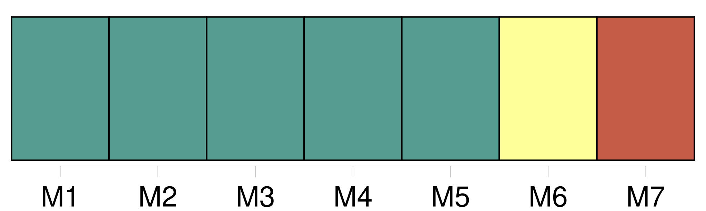

Longueur nb maillons : 17 mentions |
  |
Ces publications, et l'acte qui en sera dressé, énonceront les prénoms, noms, professions et domiciles, des futurs époux, leur qualité de majeurs ou de mineurs, et les prénoms, noms, professions et domiciles de leurs pères et [mères] [24 phrases]
L'acte authentique du consentement dès pères et [mères] ou aïeuls et aïeules, ou, à leur défaut, celui de la famille, contiendra les prénoms, noms, professions et domiciles du futur époux et de tous ceux qui auront concouru à l'acte, ainsi que leur degré de parenté. [10 phrases]
Les prénoms, noms, professions et domiciles des pères et [mères] ;
Le consentement des pères et [mères] , aïeuls et aïeules, et celui de la famille, dans les cas où ils sont requis ; [197 phrases]
Le fils qui n'a pas atteint l'âge de vingt-cinq ans accomplis, la fille qui n'a pas atteint l'âge de vingt-un ans accomplis, ne peuvent contracter mariage sans le consentement de leurs père et [mère] : en cas de dissentiment, le consentement du père suffit. [3 phrases]
Si le père et [la mère] sont morts, ou s'ils sont dans l'impossibilité de manifester leur volonté, les aïeuls et aïeules les remplacent : s'il y a dissentiment entre l'aïeul et l'aïeule de la même ligne, il suffit du consentement de l'aïeul. [2 phrases]
Les enfans de famille ayant atteint la majorité fixée par l'article 148, sont tenus, avant de contracter mariage, de demander, par un acte respectueux et formel, le conseil de leur père et de [leur mère] , ou celui de leurs aïeuls et aïeules, lorsque leur père et [leur mère] sont décédés, ou dans l'impossibilité de manifester leur volonté. [12 phrases]
Les officiers de l'état civil qui auraient procédé à la célébration des mariages contractés par des fils n'ayant pas atteint l'âge de vingt-cinq ans accomplis, ou par des filles n'ayant pas atteint l'âge de vingt-un ans accomplis, sans que le consentement des pères et [mères] , celui des aïeuls et aïeules, et celui de la famille, dans le cas où ils sont requis, soient énoncés dans l'acte de mariage, seront, à la diligence des parties intéressées et du commissaire du Gouvernement près le tribunal de première instance du lieu où le mariage aura été célébré, condamnés à l'amende portée par l'article 192, et, en outre, à un emprisonnement dont la durée ne pourra être moindre de six mois. [3 phrases]
Les dispositions contenues aux articles 148 et 149, et les dispositions des articles 151, 152, 153, 154 et 155, relatives à l'acte respectueux qui doit être fait aux père et [mère] dans le cas prévu par ces articles, sont applicables aux enfans naturels légalement reconnus. [1 phrases]
L'enfant naturel qui n'a point été reconnu, et celui qui après l'avoir été a perdu ses père et [mère] , ou dont les père et [mère] ne peuvent manifester leur volonté, ne pourra, avant l'âge de vingt-un ans révolus, se marier qu'après avoir obtenu le consentement d'un tuteur ad hoc qui lui sera nommé. [1 phrases]
S'il n'y a ni père ni [mère] , ni aïeuls ni aïeules, ou s'ils se trouvent tous dans l'impossibilité de manifester leur volonté, les fils ou filles mineurs de vingt-un ans ne peuvent contracter mariage sans le consentement du conseil de famille. [29 phrases]
Le père, et à défaut du père, [la mère] , et à défaut de père et mère, les aïeuls et aïeules, peuvent former opposition au mariage de leurs enfans et descendans, encore que ceux -ci aient vingt-cinq ans accomplis. [22 phrases]
Le mariage contracté sans le consentement des père et [mère] , des ascendans, ou du conseil de famille, dans les cas où ce consentement était nécessaire, ne peut être attaqué que par ceux dont le consentement était requis, ou par celui des deux époux qui avait besoin de ce consentement. [10 phrases]
Le père, [la mère] , les ascendans et la famille qui ont consenti au mariage contracté dans le cas de l'article précédent, ne sont point recevables à en demander la nullité. [9 phrases]
Tout mariage qui n'a point été contracté publiquement, et qui n'a point été célébré devant l'officier public compétent, peut être attaqué par les époux eux-mêmes, par les père et [mère] , par les ascendans, et par tous ceux qui y ont un intérêt né et actuel, ainsi que par le ministère public. |
La ressource peut être téléchargée sur la page Ortolang
Si vous avez des questions ou vous voyez des erreurs, merci d'envoyer un mail à silvia.federzoni89@gmail.com
Site développé par S. Federzoni (contact)